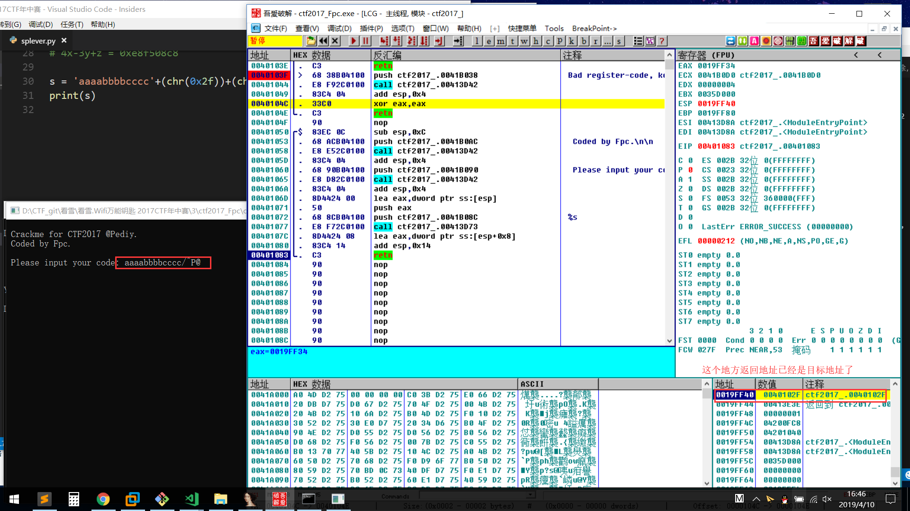
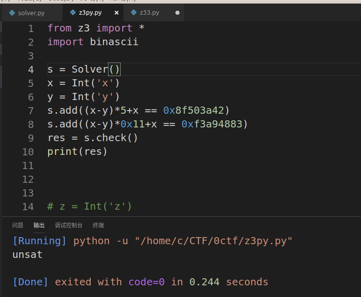
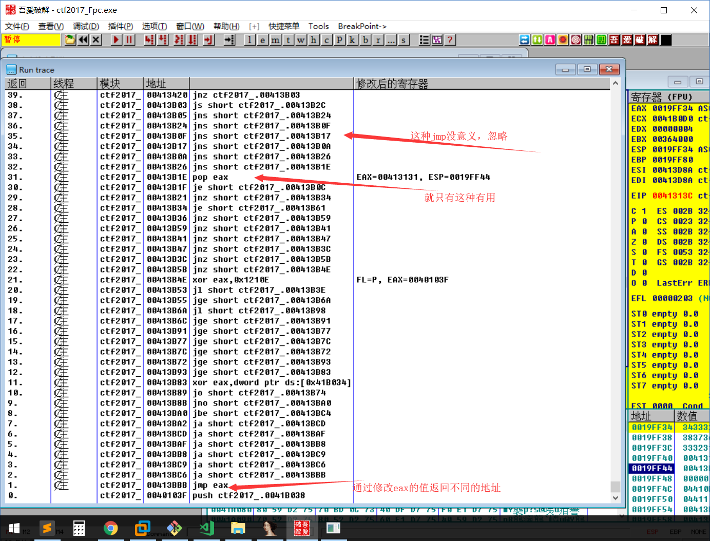

<!DOCTYPE html>
<html lang="zh-CN">


<head><meta name="generator" content="Hexo 3.9.0">
  <meta charset="UTF-8">
  <link rel="apple-touch-icon" sizes="76x76" href="/img/apple-touch-icon.png">
  <link rel="icon" type="image/png" href="/img/favicon.png">
  <meta name="viewport" content="width=device-width, initial-scale=1.0, maximum-scale=1.0, user-scalable=no, shrink-to-fit=no">
  <meta http-equiv="x-ua-compatible" content="ie=edge">
  <meta name="description" content="个人学习生活博客,寻志同道合朋友相互学习,共同进步.">
  <meta name="author" content="Cray">
  <meta name="keywords" content>
  <title>溢出到花指令去除，外加z3解决 ~ CrayBlog</title>

  <link rel="stylesheet" href="/lib/font-awesome/css/all.min.css">
<link rel="stylesheet" href="/lib/bootstrap/css/bootstrap.min.css">
<link rel="stylesheet" href="/lib/mdbootstrap/css/mdb.min.css">
<link rel="stylesheet" href="/lib/github-markdown/github-markdown.min.css">
<link rel="stylesheet" href="https://at.alicdn.com/t/font_1067060_qzomjdt8bmp.css">


  <link rel="stylesheet" href="/lib/prettify/tomorrow-night-eighties.min.css">

<link rel="stylesheet" href="/css/main.css">


  <link rel="stylesheet" href="/lib/fancybox/jquery.fancybox.min.css">


  


</head>


<body>
  <header style="height: 70vh;">
    <nav id="navbar" class="navbar fixed-top  navbar-expand-lg navbar-dark scrolling-navbar">
  <div class="container">
    <a class="navbar-brand"
       href="/">&nbsp;<strong>CrayBlog</strong>&nbsp;</a>

    <button id="navbar-toggler-btn" class="navbar-toggler" type="button" data-toggle="collapse"
            data-target="#navbarSupportedContent"
            aria-controls="navbarSupportedContent" aria-expanded="false" aria-label="Toggle navigation">
      <div class="animated-icon"><span></span><span></span><span></span></div>
    </button>

    <!-- Collapsible content -->
    <div class="collapse navbar-collapse" id="navbarSupportedContent">
      <ul class="navbar-nav ml-auto text-center">
        
          
          
          <li class="nav-item">
            <a class="nav-link" href="/">Home</a>
          </li>
        
          
          
          <li class="nav-item">
            <a class="nav-link" href="/archives/">Archives</a>
          </li>
        
          
          
          <li class="nav-item">
            <a class="nav-link" href="/categories/">Categories</a>
          </li>
        
          
          
          <li class="nav-item">
            <a class="nav-link" href="/tags/">Tags</a>
          </li>
        
          
          
          <li class="nav-item">
            <a class="nav-link" href="/about/">About</a>
          </li>
        
        
          <li class="nav-item" id="search-btn">
            <a class="nav-link" data-toggle="modal" data-target="#modalSearch">&nbsp;&nbsp;<i
                class="iconfont icon-search"></i>&nbsp;&nbsp;</a>
          </li>
        
      </ul>
    </div>
  </div>


</nav>

    <div class="view intro-2" id="background"
         style="background: url('http://ww1.sinaimg.cn/large/006vdr71ly1g9o0q0aubhj31z4140qgb.jpg')no-repeat center center;
           background-size: cover;
           background-attachment: fixed;">
      <div class="full-bg-img">
        <div class="mask rgba-black-light flex-center">
          <div class="container text-center white-text fadeInUp">
            <span class="h2" id="subtitle">
              
            </span>

            
              <br>
              <p class="mt-3">星期三, 四月 10日 2019, 4:10 下午</p>
            
          </div>

          
        </div>
      </div>
    </div>
  </header>

  <main>
    
      

<div class="container-fluid">
  <div class="row">
    <div class="d-none d-lg-block col-lg-2"></div>
    <div class="col-lg-8 nopadding-md">
      <div class="py-5 z-depth-3" id="board">
        <div class="post-content mx-auto" id="post">
          <div class="markdown-body">
            <h2 id="题目"><a href="#题目" class="headerlink" title="题目"></a>题目</h2><p>看雪.TSRC 2017CTF秋季赛</p>
<p>地址：<a href="https://ctf.pediy.com/game-fight-47.htm" target="_blank" rel="noopener">https://ctf.pediy.com/game-fight-47.htm</a></p>
<h2 id="入坑"><a href="#入坑" class="headerlink" title="入坑"></a>入坑</h2><h3 id="初始程序"><a href="#初始程序" class="headerlink" title="初始程序"></a>初始程序</h3><p>打开国际惯例，查看字符串，找到引用，</p>
<pre><code>#main函数

.text:00401000 ; int __cdecl main(int argc, const char **argv, const char **envp)
.text:00401000 _main           proc near               ; CODE XREF: start+AF↓p
.text:00401000
.text:00401000 argc            = dword ptr  4
.text:00401000 argv            = dword ptr  8
.text:00401000 envp            = dword ptr  0Ch
.text:00401000
.text:00401000                 push    offset aCrackmeForCtf2 ; &quot;\n Crackme for CTF2017 @Pediy.\n&quot;
.text:00401005                 call    printf
.text:0040100A                 add     esp, 4
.text:0040100D                 mov     dword ptr unk_41B034, 2
.text:00401017                 call    sub_401050
.text:0040101C                 call    sub_401090
.text:00401021                 call    sub_4010E0
.text:00401026                 mov     eax, dword ptr unk_41B034
.text:0040102B                 test    eax, eax
.text:0040102D                 jnz     short loc_40103F
.text:0040102F                 push    offset aYouGetIt ; &quot;You get it!\n&quot;
.text:00401034                 call    printf
.text:00401039                 add     esp, 4
.text:0040103C                 xor     eax, eax
.text:0040103E                 retn  </code></pre><p>main函数，很简单，不过不能F5，看来是作者自己汇编，（因为三连call），很简单的流程在<code>text:00401017</code>里面进行输入</p>
<pre><code>#sub_401050函数

.text:00401050 var_C           = dword ptr -0Ch #注意这个地方
.text:00401050
.text:00401050                 sub     esp, 0Ch
.text:00401053                 push    offset aCodedByFpc ; &quot; Coded by Fpc.\n\n&quot;
.text:00401058                 call    printf
.text:0040105D                 add     esp, 4
.text:00401060                 push    offset aPleaseInputYou ; &quot; Please input your code: &quot;
.text:00401065                 call    printf
.text:0040106A                 add     esp, 4
.text:0040106D                 lea     eax, [esp+0Ch+var_C]
.text:00401071                 push    eax
.text:00401072                 push    offset aS       ; &quot;%s&quot; #这里没有确定输入大小，可以导致溢出
.text:00401077                 call    _scanf
.text:0040107C                 lea     eax, [esp+14h+var_C]
.text:00401080                 add     esp, 14h
.text:00401083                 retn
.text:00401083 sub_401050      endp</code></pre><p>经过测试，输入9位没有问题，输入12位会跳转到401000地址处，但是不能输入10位或11位，会导致地址错误，堆栈不平衡。可以自己试验下。</p>
<h4 id="直接跳转到You-get-it"><a href="#直接跳转到You-get-it" class="headerlink" title="直接跳转到You get it"></a>直接跳转到You get it</h4><p>因为有溢出，我们直接覆盖ret地址,也就是这种aaaabbbbcccc+目标地址十六进制<br>input：<code>aaaabbbbcccc/@</code><br><br>但是不符合解题要求,这个值输入不了，只能复制粘贴上</p>
<h4 id="看看下面两个call"><a href="#看看下面两个call" class="headerlink" title="看看下面两个call"></a>看看下面两个call</h4><pre><code>#sub_401090()
if ( v1 &amp;&amp; v0 &amp;&amp; v1 != v0 &amp;&amp; 5 * (v1 - v0) + v1 == 2404399682 &amp;&amp; 13 * (v1 - v0) + v0 == 4015012418 )
    --unk_41B034;</code></pre><pre><code>#sub_4010E0()
if ( v1 &amp;&amp; v0 &amp;&amp; v1 != v0 &amp;&amp; 17 * (v1 - v0) + v1 == -207009661 &amp;&amp; 7 * (v1 - v0) + v0 == 866732163 )
    --unk_41B034;</code></pre><p>可能ida翻译有问题，根据汇编把他两化简出来</p>
<pre><code>401090:
ecx=5678 x
edx=1234 y
eax=eax-edx = x-y
l.3 = eax = x-y
eax = eax*5 = (x-y)*5
ecx = eax+ecx = (x-y)*5+x
(x-y)*5+x = 0x8f503a42

4010e0:
ecx=5678 x
edx=1234 y
eax=ecx=x
eax=eax-edx=x-y
l.3=eax=x-y
eax=eax*0x11=(x-y)*0x11
ecx=ecx+eax=(x-y)*0x11+x
(x-y)*0x11+x = 0xf3a94883</code></pre><p>z3 check一下，发现无解 <br>而且看了一下，只能通过这两个地址减少<code>unk_41B034</code>的值所以这个地址是不行的</p>
<h2 id="别人的write-up"><a href="#别人的write-up" class="headerlink" title="别人的write up"></a>别人的write up</h2><p><a href="https://bbs.pediy.com/thread-222372.htm" target="_blank" rel="noopener">https://bbs.pediy.com/thread-222372.htm</a><br>这个人写的很好，很接地气，让我学会了不少。<br>我自己再来记录一下</p>
<h3 id="找到一块可输入地址"><a href="#找到一块可输入地址" class="headerlink" title="找到一块可输入地址"></a>找到一块可输入地址</h3><p>因为我们可以输入flag是数字和字母，而0x40是@，说一不行，我们排除0x40xxxx地址，然后开始从0x410000开始找，发先0x413131有个很奇怪的不能识别的，管他那么多，跳转到这试试。</p>
<h3 id="跳转到0x413131"><a href="#跳转到0x413131" class="headerlink" title="跳转到0x413131"></a>跳转到0x413131</h3><p>根据前面的溢出<br>我们前面12位随意填，因为 <strong>我们输入值在内存是以十六进制反向保存</strong> 所以我们输入11A 保存到内存就是413131<br>所以我们输入aaaabbbbcccc11A 就可以跳转到这里了。然后发现全都是跳转，可以看出好像是故意留的花指令。</p>
<h2 id="od-run-跟踪去花指令"><a href="#od-run-跟踪去花指令" class="headerlink" title="od run 跟踪去花指令"></a>od run 跟踪去花指令</h2><p>这题也是让我学会了od的跟踪，确实好用啊。</p>
<h3 id="下断413131"><a href="#下断413131" class="headerlink" title="下断413131"></a>下断413131</h3><p>这里是花指令开始的地方，我们先在40102D地址下短，打开<code>od-&gt;查看-&gt;run跟踪</code>，然后打开调试-&gt;跟踪步入，然后od会记录下从413131运行到40102D这之间的地址，方便我们查看。</p>
<h3 id="更改花指令"><a href="#更改花指令" class="headerlink" title="更改花指令"></a>更改花指令</h3><p>因为我们输入的肯定是错误的flag 所以花指令肯定是不全的，而且肯定是不全的。我们查看花指令的413420 ，将jnz改为jz，让他跳转，继续验证，后面的也是同理，在 413420  0x41362e 都下断，修改指令，最后可以把有用指令清理出来</p>
<pre><code>ecx=41414141 x
ebx=42424242 y
edx=43434343 z

eax=ecx-ebx=x-y
eax=eax&lt;&lt;2 = (x-y)*4
eax=eax+ecx = (x-y)*4+x
eax=eax+edx = (x-y)*4+x+z 

(x-y)*4+x+z = 0xeaf917e2

eax=0+ecx=x
eax=eax-ebx = x-y
ebx=eax=x-y
eax=eax*2=(x-y)*2
eax=eax+ebx=(x-y)*3
eax=eax+ecx=(x-y)*3+x
ecx=eax=(x-y)*3+x
eax=eax+edx=(x-y)*3+x+z

(x-y)*3+x+z =0xe8f508c8

eax=ecx=(x-y)*3+x
eax=eax-edx=(x-y)*3+x-z

(x-y)*3+x-z = 0xc0a3c68
</code></pre><p>总结出来就是三个方程</p>
<pre><code>(x-y)*4+x+z = 0xeaf917e2
(x-y)*3+x+z = 0xe8f508c8
(x-y)*3+x-z = 0xc0a3c68</code></pre><h2 id="Z3启动"><a href="#Z3启动" class="headerlink" title="Z3启动"></a>Z3启动</h2><p>三个未知数，三个方程，应该是能有解</p>
<pre><code>from z3 import *
import binascii

s = Solver()
x = Int(&#39;x&#39;)
y = Int(&#39;y&#39;)
z = Int(&#39;z&#39;)

s.add((x-y)*4+x+z == 0xeaf917e2)
s.add((x-y)*3+x+z == 0xe8f508c8)
s.add((x-y)*3+x-z == 0xc0a3c68)
print(s.check())
res = s.model()
a2 = &#39;&#39; + binascii.a2b_hex(hex(int((&#39;%s&#39;%res[x]))).replace(&#39;0x&#39;,&#39;&#39;)).decode(&#39;utf-8&#39;)[::-1]
a2 += binascii.a2b_hex(hex(int((&#39;%s&#39;%res[y]))).replace(&#39;0x&#39;,&#39;&#39;)).decode(&#39;utf-8&#39;)[::-1]
a2 += binascii.a2b_hex(hex(int((&#39;%s&#39;%res[z]))).replace(&#39;0x&#39;,&#39;&#39;)).decode(&#39;utf-8&#39;)[::-1]
print(a2)</code></pre><p>总的来说还是很有收获，很喜欢这种题。</p>

            <hr>
          </div>
          <br>
          <div>
            
              <p>
                <i class="iconfont icon-inbox"></i>
                
                  <a class="hover-with-bg" href="/categories/CTF">CTF</a>
                  &nbsp;
                
              </p>
            
            <p>
              <i class="iconfont icon-tag"></i>
              
                <a class="hover-with-bg" href="/tags/z3">z3</a>
              
                <a class="hover-with-bg" href="/tags/%E8%8A%B1%E6%8C%87%E4%BB%A4">花指令</a>
              
                <a class="hover-with-bg" href="/tags/OD">OD</a>
              
              <span id="/2019/04/10/溢出到花指令去除，外加z3解决/" class="visitors leancloud_visitors" data-flag-title="溢出到花指令去除，外加z3解决">
                <em id="visitors-text" class="post-meta-item-text"></em>
                <i id="visitors-count"></i>
              </span>
            </p>
            
              <p class="note note-warning">本博客所有文章除特别声明外，均采用 <a href="https://zh.wikipedia.org/wiki/Wikipedia:CC_BY-SA_3.0%E5%8D%8F%E8%AE%AE%E6%96%87%E6%9C%AC" rel="nofollow noopener">CC BY-SA 3.0协议</a> 。转载请注明出处！</p>
            
          </div>
        </div>
      </div>
    </div>
    <div class="d-none d-lg-block col-lg-2 toc-container">
      
  <div id="toc">
    <p class="h4"><i class="far fa-list-alt"></i>&nbsp;目录</p>
    <div id="tocbot"></div>
  </div>

    </div>
  </div>
</div>

<!-- custom -->


<!-- Comments -->
<div class="col-lg-7 mx-auto nopadding-md">
  <div class="container comments mx-auto" id="comments">
    
      <br><br>
      
      <div class="disqus" style="width:100%">
  <div id="disqus_thread"></div>
  <script>
    var disqus_shortname = 'https-l0yy-github-io';
    var disqus_config = function () {
      this.page.url = 'http://l0yy.gitee.io/2019/04/10/溢出到花指令去除，外加z3解决/';
      this.page.identifier = '/2019/04/10/溢出到花指令去除，外加z3解决/';
    };
    (function () {
      var d = document, s = d.createElement('script');
      s.type = 'text/javascript';
      s.src = '//' + disqus_shortname + '.disqus.com/embed.js';
      s.setAttribute('data-timestamp', +new Date());
      (d.head || d.body).appendChild(s);
    })();
  </script>
  <noscript>Please enable JavaScript to view the <a href="https://disqus.com/?ref_noscript" rel="nofollow noopener">comments
      powered by Disqus.</a></noscript>
</div>
    
  </div>
</div>

    
  </main>

  
    <a class="z-depth-1" id="scroll-top-button" href="#" role="button">
      <i class="fa fa-chevron-up scroll-top-arrow" aria-hidden="true"></i>
    </a>
  

  
    <div class="modal fade" id="modalSearch" tabindex="-1" role="dialog" aria-labelledby="ModalLabel"
     aria-hidden="true">
  <div class="modal-dialog modal-dialog-scrollable modal-lg" role="document">
    <div class="modal-content">
      <div class="modal-header text-center">
        <h4 class="modal-title w-100 font-weight-bold">搜索</h4>
        <button type="button" id="local-search-close" class="close" data-dismiss="modal" aria-label="Close">
          <span aria-hidden="true">&times;</span>
        </button>
      </div>
      <div class="modal-body mx-3">
        <div class="md-form mb-5">
          <input type="text" id="local-search-input" class="form-control validate">
          <label data-error="x" data-success="v"
                 for="local-search-input">关键词</label>
        </div>
        <div class="list-group" id="local-search-result"></div>
      </div>
    </div>
  </div>
</div>
  

  <footer class="mt-5">
  <div class="text-center py-3">
    <a href="https://hexo.io" target="_blank" rel="nofollow noopener"><b>Hexo</b></a>
    <i class="iconfont icon-love"></i>
    <a href="https://github.com/fluid-dev/hexo-theme-fluid" target="_blank" rel="nofollow noopener"> <b>Fluid</b></a>
    <br>
    
  </div>
</footer>

<!-- SCRIPTS -->
<script src="/lib/jquery/jquery.min.js" ></script>
<script src="/lib/popper/popper.min.js" ></script>
<script src="/lib/bootstrap/js/bootstrap.min.js" ></script>
<script src="/lib/mdbootstrap/js/mdb.min.js" ></script>
<script src="/js/main.js" ></script>


  <script src="/js/lazyload.js" ></script>


  
    <script src="/lib/tocbot/tocbot.min.js" ></script>
  
  <script src="/js/post.js" ></script>


  <script src="/lib/prettify/prettify.min.js" ></script>
  <script>
    $(document).ready(function () {
      $('pre').addClass('prettyprint  ');
      prettyPrint();
    })
  </script>


  <script src="/lib/typed/typed.min.js" ></script>
  <script>
    var typed = new Typed('#subtitle', {
      strings: [
        '  ',
        "溢出到花指令去除，外加z3解决&nbsp;",
      ],
      cursorChar: "_",
      typeSpeed: 70,
      loop: false,
    });
    typed.stop();
    $(document).ready(function () {
      $(".typed-cursor").addClass("h2");
      typed.start();
    });
  </script>


  <script src="/lib/anchor/anchor.min.js" ></script>
  <script>
    anchors.options = {
      placement: "right",
      visible: "false",
      
      icon: "§"
      
    };
    var el = "h1,h2,h3,h4,h5,h6".split(",");
    var res = [];
    for (item of el) {
      res.push(".markdown-body > " + item)
    }
    anchors.add(res.join(", "))
  </script>


  <script src="/js/local-search.js" ></script>
  <script>
    var path = "/local-search.xml";
    var inputArea = document.querySelector("#local-search-input");
    inputArea.onclick = function () {
      getSearchFile(path);
      this.onclick = null
    }
  </script>


  <script src="/lib/fancybox/jquery.fancybox.min.js" ></script>
  <script>
    $('#post').find('img').each(
      function () {
        var _this = $(this);
        var _src = _this.attr("src");
        _this.wrap('<a data-fancybox="images" href="' + _src + '" ></a>');
      }
    );
  </script>


  <script src="/lib/smooth-scroll/smooth-scroll.min.js" ></script>


</body>
</html>
